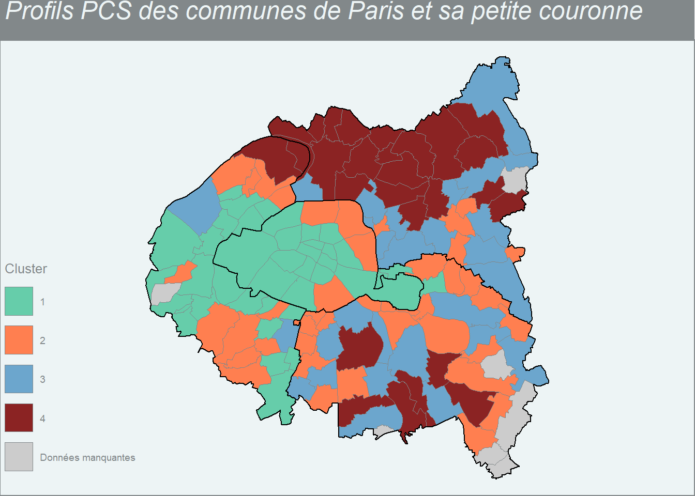
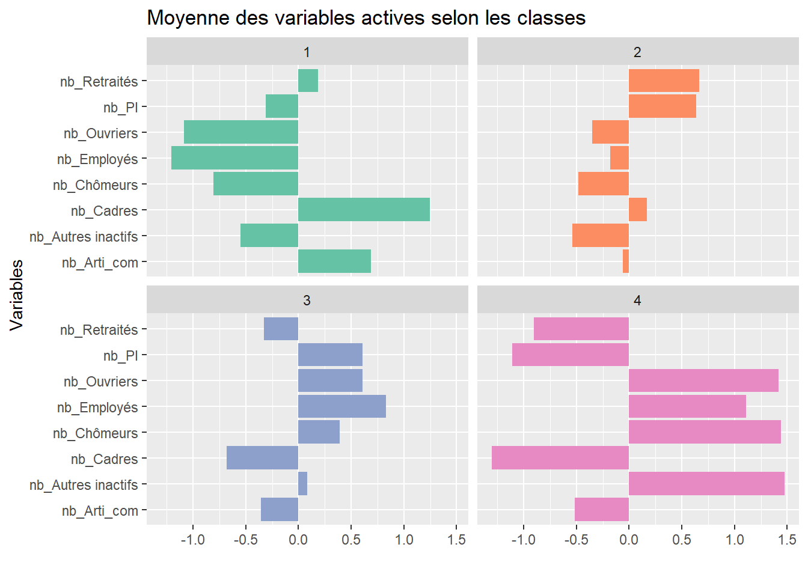

12.1 Choix des variables et préparation du tableau final
A partir de la base du RP2019, l’objectif de notre analyse est de décrire des groupes de communes qui se ressemblent ou sont relativement homogènes, c’est-à-dire qui ont des caractéristiques proches. Mais, bien sûr, les méthodes de clustering peuvent être appliquées à toutes sortes de problématiques et de données.
Pour cela, on doit avoir un tableau avec n individus ou observations (lignes) et p variables (colonnes), la mesure des variables peut être des effectifs, mais aussi des proportions. L’idée étant de regrouper nos communes en classes homogènes (=clusters) en un nombre plus restreint, nos observations sont donc constituées ici par les communes. Il faut ensuite choisir sur quelles caractéristiques on va les regrouper et chercher une certaine homogénéité. Cela peut être à partir de différentes choses selon notre base de données : caractéristiques socio-professionnelles de la personne de référence du ménage, caractéristiques des logements, etc.
12.1.1 Variable socio-professionnelle caractérisant la personne de référence du ménage
On va dans cet exemple (communes de Paris et sa petite couronne) s’intéresser aux caractéristiques socio-professionnelles de la population de 15 ans ou plus : on aura en lignes nos n communes des 4 départements et en colonnes nos p variables d’entrées, soient par exemple le nombre d’habitants, le nombre d’individus qui sont actuellement chômeurs, le nombre de personnes en emploi, le nombre de cadres, etc.
On va réaliser ici un exemple très simple en ne prenant qu’une variable reconstruite à partir de celle de la catégorie socio-professionnnelle (CS1) qui a actuellement 8 modalités et de celle du type d’activité (TACT), cela permettant de distinguer les actifs en emploi des chômeurs. Si l’on prend plus de variables, il faut faire attention à ce que certaines modalités ne se recoupent pas entre elles, ou quand l’information est trop proche - par exemple la condition d’emploi et le type d’activité. Pour cela, il faut étudier les corrélations entre les variables finalement obtenues, avec les fonctions cor() ou corrplot(cor()) du package corrplot par exemple. Mais si le nombre de variables prises en compte est importante, il peut être également plus pertinent de procéder avant la méthode de clustering à une méthode d’analyse factorielle.
Regardons d’abord pour cette variable - CS1 - si un regroupement et un recodage des modalités est nécessaire.
# Chargement des librairieslibrary(tidyverse)library(janitor)library(gt)# Chargement des tablesRP_final <-readRDS(file ="data/RP_final.Rdata")meta <-readRDS(file ="data/meta.Rdata")# Appel fonctionssource("fonctions/fonctions.R")meta %>%select(COD_VAR, COD_MOD, LIB_MOD) %>%filter(COD_VAR %in%c("CS1", "TACT"))
COD_VAR COD_MOD
1 CS1 1
2 CS1 2
3 CS1 3
4 CS1 4
5 CS1 5
6 CS1 6
7 CS1 7
8 CS1 8
9 TACT 11
10 TACT 12
11 TACT 21
12 TACT 22
13 TACT 23
14 TACT 24
15 TACT 25
LIB_MOD
1 Agriculteurs exploitants
2 Artisans, commerçants et chefs d'entreprise
3 Cadres et professions intellectuelles supérieures
4 Professions Intermédiaires
5 Employés
6 Ouvriers
7 Retraités
8 Autres personnes sans activité professionnelle
9 Actifs ayant un emploi, y compris sous apprentissage ou en stage rémunéré.
10 Chômeurs
11 Retraités ou préretraités
12 Élèves, étudiants, stagiaires non rémunéré de 14 ans ou plus
13 Moins de 14 ans
14 Femmes ou hommes au foyer
15 Autres inactifs
# Fonction "tableau" créée dans la section 6RP_final %>%filter(!AGER20 %in%c("2","5", "10","14")) %>%tableau(var_quali = CS1, nom_var_quali ="PCS") %>%gt()
PCS
Effectif
Pourcentage
1
890.8146
0.0
2
187816.5390
3.4
3
1202479.4687
21.5
4
838616.6681
15.0
5
872375.2789
15.6
6
416074.6945
7.4
7
1020480.0552
18.2
8
1055867.3440
18.9
Total
5594600.8630
100.0
Il faut donc supprimer la modalité “1” qui correspond aux agriculteurs car trop peu représentés sur ce champ, mais pour le reste on peut laisser comme cela.
12.1.2 Création du tableau de contingence
Pour créer le tableau de contigence donnant le nombre d’individus pour chacune des modalités de cette variable et pour chaque commune, on va créer une fonction qu’on va appeler tab_cont_n, pour avoir en ligne les communes et en colonne chaque modalité de la variable en question :
tab_cont_n <-function(data, ..., nom_var, var, prefix_var){ tab_n <- data %>%group_by(...) %>%summarise({{ nom_var }} :=round(sum(IPONDI))) %>%pivot_wider(names_from = {{ var }}, values_from = {{ nom_var }},values_fill =0, names_prefix = prefix_var)return(tab_n)}
On peut l’intégrer dans notre script fonctions.R pour pouvoir l’utiliser plus tard en appelant simplement ce fichier en début de code.
On crée maintenant notre tableau de contingence, en créant comme déjà mentionné une variable croisant l’information sur la catégorie socio-professionnelle et celle sur le statut d’activité regroupé en emploi, chômage, retraités ou autres inactifs.
# On enlève les agriculteurs, , la commune sans dénomination et les moins de 15 anscat_soc <- RP_final %>%filter(CS1!="1"& COM!="ZZZZZ"&!AGER20 %in%c("2","5", "10","14")) %>%mutate(CS_empcho =as.factor(case_when(CS1 =="2"& TACT=="11"~"Arti_com", CS1 =="3"& TACT=="11"~"Cadres", CS1 =="4"& TACT=="11"~"PI", CS1 =="5"& TACT=="11"~"Employés", CS1 =="6"& TACT=="11"~"Ouvriers", CS1 !="7"& TACT=="12"~"Chômeurs", CS1 =="7"& TACT=="21"~"Retraités",TRUE~"Autres inactifs"))) %>%tab_cont_n(COM, CS_empcho, nom_var=cat_soc, var=CS_empcho, prefix_var="nb_")cat_soc %>%head(10)
On a donc 136 lignes correspondant à 136 communes de nos 4 départements, et 9 variables.
On va rajouter le nom des communes comme identifiant dans le tableau, c’est-à-dire dans le nom de la 1ère colonne, avec la fonction column_to_rownames(). Cela peut être conseillé pour la procédure de clustering, afin que chaque commune soit bien identifiée par son nom (label) ; on verra toutefois dans notre exemple que cela devient illisible si on a trop de communes/individus.
Comme nos communes ont plus d’habitants que d’autres, pour éviter un effet taille de nos communes, on va utiliser la distance du khi-2. Pour cela, deux façons de faire avec deux packages différents : soit le package vegan() et la fonction decostand() avec l’argument method="chi.square" qui crée un tableau sur lequel on applique ensuite la méthode de distance euclidienne et dans ce cas on aura des distinces similaires à celles du khi-2 (voir ici) ; soit le package ade4 et les fonctions combinées dist.dudi(dudi.coa()) avec l’argument amongrow=TRUE (pour préciser que les distances doivent être calculées entre lignes, ici les communes).
# Etape 1 : on transforme la table sur laquelle on obtiendra des distances du khi-deux# install.packages("vegan")library(vegan)cat_soc_chi2 <-decostand(cat_soc, method ="chi.square")# Etape 2 : on crée la matrice de distance, en utilisant la distance euclidienne # standard sur la table transformée, ce qui nous donnera des distances similaires # à celle du khi-2dist_mat <-dist(cat_soc_chi2, method ='euclidean')# on peut vérifier qu'on obtient la même matrice avec la seconde méthode évoquée# install.packages("ade4")library(ade4)dist_mat_bis <-dist.dudi(dudi.coa(cat_soc, scannf=FALSE, nf=7), amongrow=TRUE)# si on souhaite voir et comparer les matrices de distances, # on doit les transformer en matrice avec la fonction 'as.matrix' :cat_soc_chi2_m <-as.matrix(dist_mat)cat_soc_chi2_bis_m <-as.matrix(dist_mat_bis)# elles sont bien similaires -> on peut supprimer de l'environnement la seconderm(cat_soc_chi2_bis_m)#Etape 3 : on choisit la méthode d'agrégation, ici la plus standard, le critère de Wardclassif_socioprof <-hclust(dist_mat, method ="ward.D2")#Etape 4 : on visualise l'arbre de classification ou dendogrammeplot(classif_socioprof, xlab="Commune", main="Dendogramme")
On remarque ici que comme nous avons mis en label le nom des communes, on peut tout de suite savoir quelles communes sont proches et vont former des classes. Toutefois, avec 136 communes ce n’est absolument pas lisible !! Donc on peut aussi les enlever avec l’option label=FALSE dans la fonction plot().
Il existe aussi une fonction viaggplot2 pour dessiner l’abre, mais il faut installer avant le package ggdendro.
Il faut maintenant prendre une décision : où coupe-t-on l’arbre pour obtenir une partition de la population (ici nos communes), autrement dit combien de classes choisissons-nous ?
On peut d’abord s’appuyer sur la forme du dendogramme : plus une “branche” est haute et plus on perd en distance ou ici (critère de Ward) en inertie intraclasse1, il faudra donc couper l’arbre au niveau de cette branche. Il faut également prendre en compte ce qui peut être le mieux pour l’analyse : si on aboutit à une classification en 2 classes, cela risque d’être peu intéressant à analyser, mais si on a une classification en 5 classes ou plus, cela va devenir compliqué à interpréter…
Ici, dans les deux cas, il semble que choisir 2 classes soit très pertinent, mais on voit qu’on pourrait aussi choisir 4 classes (ou même 3 éventuellement) si l’on veut rentrer un peu plus dans le détail de l’analyse.
On peut également s’aider de représentations des sauts d’inertie du dendrogramme selon le nombre de classes qui peut être retenu, avec la fonction plot et en récupérant l’information sur l’inertie (height).
# On stocke l'attribut `$height` dans l'objet `inertie` en triant les valeurs par # ordre décroissant.inertie_socioprof <-sort(classif_socioprof$height, decreasing=TRUE)plot(inertie_socioprof, type="s", xlab="Nombre de classes", ylab="Inertie", xlim =c(1,15), xaxp =c(1,15,14))points(c(2, 3, 4), inertie_socioprof[c(2,3,4)], col =c("blue3", "brown3", "chartreuse3"), cex =2, lwd =2)
Ou encore créer d’autres indicateurs plus rigoureux, comme la part de la perte d’inertie interclasse dans l’inertie totale (on parle aussi de “semi-partial R-squared”).
#on crée un indicateur de part en %partinertie_socioprof <- inertie_socioprof/sum(inertie_socioprof)*100plot(partinertie_socioprof, type="b", xlab="Nombre de classes", ylab="Part dans l'inertie totale en %", xlim =c(1,15), xaxp =c(1,15,14))
On voit que les graphiques sont assez proches, qu’ils soient construits à partir de la mesure en valeur absolue ou en valeur relative. Il y a un saut important après 2 classes (hauteur sur le 1er graphique, ou importance de la pente sur le 2ème graphique) par exemple.
Enfin, à savoir que des fonctions existent donnant une indication de la “meilleure” partition à choisir, mais attention le choix se fait aussi (et peut-être surtout) en fonction de l’analyse que l’on veut mener et de l’interprétation que l’on pourra faire des classes obtenues ! Pour l’exemple, je vous mets ci-dessous le code de Julien Larmarange pour tester ce type de fonctions ; la “meilleure” partition selon la perte d’inertie relative est représentée par un point noir et la seconde par un point gris. On voit qu’ici il est bien indiqué d’abord 2 classes, puis comme seconde “meilleure” partition 3 classes, ce qui correspond plutôt bien aux graphiques précédents.
library(devtools)source(url("https://raw.githubusercontent.com/larmarange/JLutils/master/R/clustering.R"))#On a choisit un maximum de 15 classes ici...best.cutree(classif_socioprof, min=2, max=15, graph =TRUE, xlab ="Nombre de classes", ylab ="Inertie relative")
[1] 2
Finalement, au vu de la forme du dendogramme et des graphes sur l’inertie (et de la fonction d’aide à la décision précédente), on choisit de prendre 4 classes pour une analyse plus fine, mais on va stocker également les résultats pour 3 classes. On peut de nouveau visualiser le dendogramme en matérialisant les différents choix du nombre de classes.
On peut également utiliser la fonction color_branches() du package dendextend(), mais il faut appeler de nouveau ggplot2 après.
# On peut encore également utiliser la fonction `color_branches()` du package # `dendextend()` mais il faut appeler de nouveau `ggplot2` aprèslibrary(dendextend)library(ggplot2)ggplot(color_branches(classif_socioprof, k =4), labels =FALSE)
On choisit donc d’abord d’analyser notre clustering en 3 ou 4 classes : pour découper l’arbre et obtenir la partition souhaitée, on utilise la fonction cutree(), et on peut ensuite visualiser quelle commune est dans quelle classe et le nombre (et la part) de communes par classe.
On intègre ensuite la variable au tableau initial “cat_soc_chi2” qui contient les variables utilisées, mais on pourra ensuite fusionner la table avec notre table initiale “RP_final” pour mener des analyses plus approfondies des classes, y compris avec des variables non utilisées dans le clustering.
#Découpage en k classesclasse3_socioprof <-cutree(classif_socioprof, k=3)classe4_socioprof <-cutree(classif_socioprof, k=4)#Liste des groupes#library(janitor)tabyl(classe3_socioprof) %>%adorn_pct_formatting() %>%gt()
#Ajout des variables de classe dans la table initiale de clustering : on ne crée qu'une# seule table qui aura nos 2 variables de typo selon 3 ou 4 classesclust_socioprof <-cbind.data.frame(cat_soc_chi2, classe3_socioprof=as.factor(classe3_socioprof))clust_socioprof <-cbind.data.frame(clust_socioprof, classe4_socioprof=as.factor(classe4_socioprof))
La 1ère classe comprend donc 39 communes soit 29% de l’ensemble des communes de Paris et sa petite couronne, la 2ème classe 41 communes ou 30%, et la 3ème classe rassemble 56 communes soit 41% lorsqu’elle est agrégée et sinon se divive en deux classes de même nombre (28 et 28) ou proportion dans la partition à 4 classes. La dernière sortie nous donne la place de chaque commune dans chacune des 4 classes, mais ce n’est pas super lisible comme cela.
12.2.2 Visualisation sur la carte des communes et départements
Enfin, on peut visualiser sur la carte des communes et départements les quatre classes construites et choisies.
#library(geojsonsf)library(sf)library(mapsf)# on charge le fonds de carte des communes -> vous pouvez reprendre les tables utilisées dans le cours de Claude Grasland, sinon la télécharger sur opendatasoft# map_com <- geojson_sf("https://public.opendatasoft.com/api/explore/v2.1/catalog/datasets/geoflar-communes-2015/exports/geojson?lang=fr&refine=nom_reg%3A%22ILE-DE-FRANCE%22&timezone=Europe%2FBerlin")map_com <-readRDS("data/map_com.RDS")map_com <- map_com %>%rename(COM=com_code) %>%mutate(COM=as.character(COM))map_dept <- map_com %>%group_by(dep_code, dep_name) %>%summarise()# si ajout contours établissements publics territoriaux (EPT)# map_ept <- readRDS("data/map_ept.RDS")typo3 <- clust_socioprof %>%rownames_to_column(var ="COM") %>%select(COM, classe3_socioprof)map_com_typo3 <- map_com %>%select(COM, com_name, geometry) %>%left_join(typo3)mf_theme("agolalight")mf_map(map_com_typo3, var="classe3_socioprof", type="typo", pal =c("aquamarine3", "coral", "skyblue3"),leg_pos ="bottomleft", leg_title="Cluster",col_na ="gray80", leg_no_data ="Données manquantes")mf_map(map_dept, var="nom_dep", type ="base",col =NA, col_na ="gray80",border="black",lwd=1, add =TRUE)mf_layout(title ="Profils PCS des communes de Paris et sa petite couronne",frame =TRUE, credits=" ", arrow = F)
typo4 <- clust_socioprof %>%rownames_to_column(var ="COM") %>%select(COM, classe4_socioprof)map_com_typo4 <- map_com %>%select(COM, com_name, geometry) %>%left_join(typo4)mf_theme("agolalight")mf_map(map_com_typo4, var="classe4_socioprof", type="typo", pal =c("aquamarine3", "coral", "skyblue3", "brown4"),leg_pos ="bottomleft", leg_title="Cluster",col_na ="gray80", leg_no_data ="Données manquantes")# mf_map(map_ept, var="ept_name", type = "base",# col = NA, col_na = "gray80",# border="blue",lwd=1, add = TRUE)mf_map(map_dept, var="nom_dep", type ="base",col =NA, col_na ="gray80",border="black",lwd=1, add =TRUE)mf_layout(title ="Profils PCS des communes de Paris et sa petite couronne",frame =TRUE, credits=" ", arrow = F)

On voit avec la seconde carte que la partition en 4 classes permet de préciser le clustering en particulier pour les communes du département de Seine-St-Denis. On va retenir définitivement cette partition en 4 classes pour l’interprétation.
12.2.3 Interprétation
Il faut maintenant comprendre la partition obtenue et interpréter nos 4 classes en les décrivant principalement ici à partir des variables utilisées dans le clustering. On peut pour cela utiliser le package FactoMineR qui permet avec la fonction catdes de sortir des résultats sur, d’une part, les liens les plus significatifs entre les variables actives de la CAH et la variable globale de cluster/classes, et, d’autre part de manière plus précise, sur les liens les plus significatifs entre les variables et chacune des classes. De manière générale, le package FactoMineR est presque indispensable pour toute analyse factorielle de données et/ou clustering (voir ici).
library(FactoMineR)# on retire la variable de classe qui ne nous intéresse pas (la type en 3 classes ici)catdes(clust_socioprof[, -9], num.var =9)
On peut voir que la 1ère classe est marquée par une surreprésentation du nombre de personnes (de référence du ménage) cadres, puis artisans-commerçants ; et au contraire, une sous-représentation des employés, ouvriers, chômeurs ou encore autres inactifs. Sur la carte, on avait vu que cette classe était présente dans 16 des 20 arrondissements de Paris, ainsi que dans des communes des Hauts-de-Seine. C’est donc la classe correspond aux communes des catégories d’actifs en emploi plutôt favorisées.
La seconde classe est, elle, caractérisée par une surreprésentation du nombre de retraités et de professions intermédiaires, et par une sous-représentation du nombte d’autres inactifs, chômeurs et ouvriers. Géographiquement, on avait vu qu’elle correspondait aux 4 autres arrondissements de Paris et à des communes disséminées surtout dans les Hauts-de-Seine et le Val-de-Marne. Cette classe pourraient correspondre à des classes moyennes supérieures soient en emploi (professions intermédiaires) soient à la retraite.
Dans la troisième classe, on note une surreprésentation des employés, des professions intermédiaires, des ouvriers et des chômeurs, et au contraire une sous-représentation des cadres et artisans-commerçants. Elle semble ainsi à l’opposé de la 1ère classe. Elle est davantage présente dans les communes du Val-de-Marne et de la Seine-Saint-Denis. Cette troisième classe correspond probablement ainsi à des catégories sociales moyennes basses, voire à des défavorisées. Enfin, la quatrième classe se caractérise par une surreprésentation des autres inactifs, des chômeurs, des ouvriers et des employés. Elle se retrouve plutôt dans les communes de la Seine-Saint-Denis, et un peu dans le Val-de-Marne. Elle correspondrait alors aux catégories sociales les plus défavorisées.
On peut recupérer les statistiques de la moyenne de ces variables pour les visualiser sur un graphique comparant les 3 classes, ainsi que l’ensemble des communes, on va plutôt le faire à partir des variables centrées réduites, ce qui permet une une comparaison directe des profils de classe à partir de variables dont l’ordre de grandeur (l’écart-type) peut être différent.
# La fonction `scale()` permet de normaliser par colonne les valeurs numériquesclust_socioprof_sc <-as.data.frame(scale(clust_socioprof[, -c(9, 10)])) clust_socioprof_1 <-cbind.data.frame(clust_socioprof_sc, classe=as.factor(classe4_socioprof))mean_var <- clust_socioprof_1 %>%group_by(classe) %>%summarise_all(list(mean))mean_var %>%pivot_longer(cols=-classe, names_to="Variable", values_to="Value") %>%ggplot() +aes(x=Variable, y=Value, fill=classe) +geom_bar(stat="identity") +facet_wrap(~classe) +scale_fill_brewer(palette ="Set2") +theme_grey() +coord_flip() +labs(title ="Moyenne des variables actives selon les classes",x="Variables", y="") +theme(legend.position ="none")

Cela nous dit la même chose que la description précédente mais dans un format plus visuelle.
Pour aller plus loin dans la compréhension des classes, il faut utiliser d’autres variables et procéder de même à des analyses descriptives croisant ces variables avec les 4 classes de la typologie obtenue. Pour cela, il faut récupérer des variables de la table initiale du RP et sortir des tableaux de statistiques ou des graphiques comme précédemment.
# Pour d'autres variables, tableau croisé en pourcentage à partir d'une nouvelle# fonctionTabcr_pctcol <-function(data, var1, var2, pond=IPONDI, nom_var1="classe"){ tabcroisefin <- data %>%group_by({{var2}}) %>%count({{var1}}, wt={{pond}}) %>%pivot_wider(names_from = {{var1}},values_from ="n", names_prefix =paste0(nom_var1,"_")) %>%adorn_totals(c("row",'col')) %>%adorn_percentages("col") %>%adorn_pct_formatting(digits=2) return(tabcroisefin)}clust_socioprof <- clust_socioprof %>%rownames_to_column(var="COM")# Liste variable à étudier plus en détails par exemple: "HLML","AGER20", "DIPL", IMMI,# "EMPL", "RECH", "STAT_CONJ", "STOCD", "TACTD16", "TP", "TYPL", "ETUD", SURF, CATLclust_socioprof %>%left_join(RP_final[RP_final$CS1!="1"& RP_final$COM!="ZZZZZ"&!RP_final$AGER20 %in%c("2","5","10","14"),c("COM", "IPONDI", "DIPL")],by="COM") %>%libelles_var(cod_var="DIPL", new_var = Diplome_nom) %>%Tabcr_pctcol(var1=classe4_socioprof, var2=Diplome_nom) %>%gt()
Diplome_nom
classe_1
classe_2
classe_3
classe_4
Total
Pas de scolarité ou arrêt avant la fin du primaire
1.51%
3.06%
4.56%
8.24%
3.62%
Aucun diplôme et scolarité interrompue à la fin du primaire ou avant la fin du collège
2.29%
3.90%
5.67%
8.93%
4.46%
Aucun diplôme et scolarité jusqu’à la fin du collège ou au-delà
3.01%
4.54%
6.59%
9.78%
5.21%
CEP (certificat d’études primaires)
2.48%
3.76%
4.46%
4.54%
3.54%
BEPC, brevet élémentaire, brevet des collèges, DNB
6.04%
7.39%
8.24%
9.00%
7.31%
CAP, BEP ou diplôme de niveau équivalent
7.16%
12.02%
16.42%
17.35%
11.90%
Baccalauréat général ou technologique, brevet supérieur, capacité en droit, DAEU, ESEU
11.37%
11.75%
12.24%
11.90%
11.72%
Baccalauréat professionnel, brevet professionnel, de technicien ou d’enseignement, diplôme équivalent
3.66%
5.43%
6.95%
7.28%
5.36%
BTS, DUT, Deug, Deust, diplôme de la santé ou du social de niveau bac+2, diplôme équivalent
8.49%
10.14%
10.13%
8.11%
9.19%
Licence, licence pro, maîtrise, diplôme équivalent de niveau bac+3 ou bac+4
15.80%
13.86%
11.11%
7.58%
13.04%
Master, DEA, DESS, diplôme grande école niveau bac+5, doctorat de santé
35.20%
22.10%
12.57%
6.71%
22.68%
Doctorat de recherche (hors santé)
3.00%
2.04%
1.05%
0.57%
1.97%
Total
100.00%
100.00%
100.00%
100.00%
100.00%
Enfin, on a vu qu’il y avait plusieurs méthodes d’agrégation, ici nous avons utilisé le critère de Ward. Il est possible de tester d’autres méthodes et de comparer les dendogrammes alors obtenus.
#Etape 3 bis : on choisit d'autres méthodes d'agrégationclassif.s <-hclust(dist_mat, method ="single")classif.c <-hclust(dist_mat, method ="complete")classif.a <-hclust(dist_mat, method ="average")classif.cd <-hclust(dist_mat, method ="centroid")#Etape 4 bis : on visualise les dendogrammes des 4 nouvelles méthodes + la 1ère utilisée précédemment, et on les compare sur un même graphiquepar(mfrow =c(2, 3))plot(classif.s, xlab="Commune", main ="Single", label=FALSE)plot(classif.c, xlab="Commune", main ="Complete", label=FALSE)plot(classif.a, xlab="Commune", main ="Average", label=FALSE)plot(classif.cd, xlab="Commune", main ="Centroid", label=FALSE)plot(classif_socioprof, xlab="Commune", main ="Ward", label=FALSE)#par(mfrow = c(1, 1)
On observe donc de fortes différences entre les dendogrammes. Par exemple, la méthode du “lien simple” ou “minimum” va avoir tendance à construire une grosse classe et une autre plus petite, c’est bien ce que l’on voit ici ; alors qu’au contraire, la méthode d’agrégation dite “complete” tend à construire des groupes plutôt de taille égale, en revanche, il faut savoir qu’elle est sensible aux points aberrants (on voit que ce n’est pas le cas ici). Enfin, on voit également que la méthode du “centroïd” (barycentre/centre de gravité des classes) produit un dendogramme particulier et déséquilibré comme le premier graphe (méthode du “lien simple”). C’est bien la méthode de Ward qui est la plus utilisée en pratique.
12.3 La méthode des k-means appliquée à nos données
On repart de notre table de données transformée (“cat_soc_chi2”) et on lui applique la fonction kmeans de R. Comme décrit dans la section précédente de manière théorique, il faut : i) choisir le nombre de classes que l’on souhaite avoir avec l’option centers=k, pour pouvoir comparer avec la méthode précédente de la CAH, on va donc choisir le même nombre de groupe, soit 4 ; ii) et réitérer toute la procédure plusieurs fois avec des individus pris au départ qui soient différents, avec l’option nstart=, ici on choisit 100 essais, et la fonction prendra le meilleur pour l’algorithme.
clust.kmeans <-kmeans(cat_soc_chi2, centers=4, nstart=100)# On affiche ensuite les résultats principaux : effectif des classes, moyenne des # variables actives, groupes d'affectation des individus, # proportion d'inertie expliquée par la partition (ici 62%)clust.kmeans
On voit ainsi que certaines classes de la CAH (les 4 lignes du tableau) coïncident exactement ou quasi-exactement avec les classes des K-means (en colonne), et une un peu moins car un peu plus distribuée entre plusieurs classes de la typologie des K-means . Autrement dit, on conclut à un changement de classes à la marge.
clust_kmeans <- clust.kmeans$cluster %>%as.data.frame() %>%rename("classe4_socioprof"=".") %>%rownames_to_column("COM")map_com_typo_1 <- map_com %>%select(COM, com_name, geometry) %>%left_join(clust_kmeans)mf_theme("agolalight")mf_map(map_com_typo_1, var="classe4_socioprof", type="typo", pal =c("aquamarine3", "coral", "skyblue3", "brown4"),leg_pos ="bottomleft", leg_title="Cluster",col_na ="gray80", leg_no_data ="Données manquantes")mf_map(map_dept, var="nom_dep", type ="base",col =NA, col_na ="gray80",border="black",lwd=1, add =TRUE)mf_layout(title ="Profils PCS des communes de Paris et sa petite couronne",frame =TRUE, credits=" ", arrow = F)
On a vu avec la description de la méthode, que ce qui est difficile ici c’est qu’on choisit nous-mêmes le nombre de classes dans une première étape sans savoir parfois pourquoi. Il faut donc souvent faire varier le nombre de classes de départ (centers=k), à ne pas confondre avec les individus centres initiaux de classes (ce que l’on a fait précédemment en indiquant l’option nstart=100). A partir d’un exemple de code récupéré sur un document de cours externe (ici), on peut créer une boucle pour répéter la procédure en changeant le nombre de classes, et ensuite construire un graphique visualisant l’indicateur de pourcentage d’inertie expliquée. Plus précisément, on fait tourner plusieurs fois la méthode des K-means sur notre base de données centrées-réduites pour un nombre de classes souhaitées variant entre 2 et 6, et on récupère la part de l’inertie expliquée par la partition obtenue (indicateur between_SS / total_SS que l’on a vu dans la sortie précédente). Puis, on crée un graphique représentant cette part pour chacune des partitions construites.
# Boucle pour calculer la part de l'inertie expliquée par la partition, selon le # nombre de classes souhaitéesinertie.expl <-rep(0, times=6)for (k in2:6){ clus <-kmeans(cat_soc_chi2, centers=k, nstart=100) inertie.expl[k] <- clus$betweenss/clus$totss}#Création du graphiqueplot(1:6, inertie.expl, type="b", xlab="Nombre de classes choisies", ylab="Pourcentage d'inertie expliquée par la partition")
On observe sur ce graphique qu’à partir de k=3, autrement dit de 3 classes, la “création” d’une classe supplémentaire ne semble pas augmenter significativement la part d’inertie expliquée par la partition. Pour comprendre ce que revêt ce “significativement”, on peut regarder notamment la pente de chaque droite reliant les points d’une partition à une autre : pour la droite reliant le nombre de classes “2” et “3”, on voit que sa pente diminue déjà pas mal par rapport à la droite reliant les deux classes précédentes, et cela est encore plus visible pour les pentes suivantes.
Une autre méthode évoquée par le même document de cours propose d’utiliser le package fpc qui propose une fonction kmeansruns évaluant les différentes partitions à partir de 2 critères à choisir : l’indice de Calinski Harabasz - option criterion="ch", ou celui de la “average silhouette width” (largeur moyenne de la silhouette) - option criterion="asw". On peut ensuite construire un graphique comme précédemment pour visualiser l’évolution de cet indice selon le nombre de classes de la partition.
# OU utilisation du package fpc et de l'indice de Calinski Harabasz library(fpc)#Evaluation des solutionseval.kmeans <-kmeansruns(cat_soc_chi2,krange=2:6,criterion="ch",)#Graphiqueplot(1:6, eval.kmeans$crit,type="b", xlab="Nombre de classes", ylab="Indice de Calinski Harabasz ")
Pour lire et choisir le “bon” nombre de classes selon ce critère, il faut maximiser l’indice donc trouver le point le plus haut : ici, c’est la partition à 2 classes qui semble la “meilleure” typologie comme on l’avait vu dans la CAH avec le dendogramme, mais une partition a minima en 3 classes semble plus intéressante pour l’interprétation.
Plus précisément, à chaque étape d’agrégation, la part de l’inertie interclasse passe en inertie intraclasse.↩︎